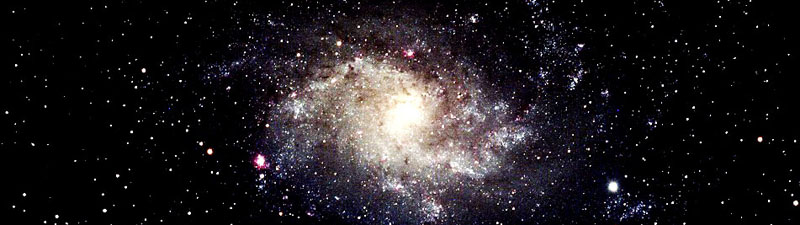

The purpose of the website is to inform members of Oil City Region Astronomical Society (ORAS) and non-members about ORAS events and general astronomy.
This website is aimed toward anybody interested in outer space. Either expert or new-be, this site is informational and educational.
The header photo:

I chose this photo as the header photo because it is a panorama. Panorama photography is great because it shows the most information. This particular panorama shows the observatory, which is a great introduction to ORAS because that's where the events take place. The event pictured (with the tents) is called "AstroBlast." This event is annual, it is a great representation of ORAS!
To enhance this photo from the original, I cropped out unnecessary information (telephone poles, trees, etc.) and used the rule of thirds by placing the observatory in the left side of the photo. After cropping, I adjusted the lighting to make the fog seem more dramatic.
The next three photos I chose to support my sight. Although all different, they aid at explaining the aim of the website and organization.

I added this photo to give a face to the name. These are the members of ORAS (circa 2011). These are the people who are heavily involved with the organization and are board members. I thought it would be a good idea to add this photo so the audience could see who's making ORAS possible. For this photo, first I cropped it to focus on the group. Then, I changed the colors and shadows to make everyone's skin tones more even, since there was a shadow in the original.
This nebula was taken with the ORAS telescope. It is important that I add this photo, not only because it's visually pleasing, but its also shows the legitimacy of this organization. At the observatory, its possible to see this nebula and a whole lot more of "space stuff." For editing, I did not have to do too much to enhance this photo. I cropped it because the nebula wasn't exactly center or to the left, I wanted to give it a definite place in the photo. In addition, I adjusted the contrast. This made the nebula, galaxies and stars pop.

I included this photo because it is a great photo of the actual observatory. It is a little more close up than the panorama, header photo. I thought it would be a clear photo to add to the site so visiters knows "where the magic happens." For editing, I made this photo brighter to make the rainbow and observatory pop out from the photo.
I got the photos and the permission to use them from Tim Spuck, President of ORAS.
The top five reasons I chose these photos was:
Another great example of photos that follow these criteria is: